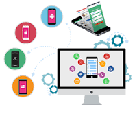

App Development

Mobile app development is the act or process by which a mobile app is developed for mobile devices, such as personal digital assistants, enterprise digital assistants or mobile phones. These applications can be pre-installed on phones during manufacturing platforms, or delivered as web applications using server-side or client-side processing (e.g., JavaScript) to provide an "application-like" experience within a Web browser. Application software developers also must consider a long array of screen sizes, hardware specifications, and configurations because of intense competition in mobile software and changes within each of the platforms. Mobile app development has been steadily growing, in revenues and jobs created. A 2013 analyst report estimates there are 529,000 direct app economy jobs within the EU then 28 members (including the UK), 60 percent of which are mobile app developers.[1]
As part of the development process, mobile user interface (UI) design is also essential in the creation of mobile apps. Mobile UI considers constraints, contexts, screen, input, and mobility as outlines for design. The user is often the focus of interaction with their device, and the interface entails components of both hardware and software. User input allows for the users to manipulate a system, and device's output allows the system to indicate the effects of the users' manipulation. Mobile UI design constraints include limited attention and form factors, such as a mobile device's screen size for a user's hand(s). Mobile UI contexts signal cues from user activity, such as location and scheduling that can be shown from user interactions within a mobile app. Overall, mobile UI design's goal is mainly for an understandable, user-friendly interface. The UI of mobile apps should: consider users' limited attention, minimize keystrokes, and be task-oriented with a minimum set of functions. This functionality is supported by mobile enterprise application platforms or integrated development environments (IDEs).
Mobile UIs, or front-ends, rely on mobile back-ends to support access to enterprise systems. The mobile back-end facilitates data routing, security, authentication, authorization, working off-line, and service orchestration. This functionality is supported by a mix of middleware components including mobile app server, mobile backend as a service (MBaaS), and service-oriented architecture (SOA) infrastructure.